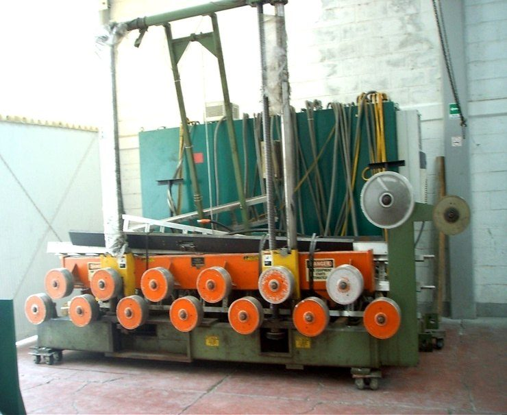
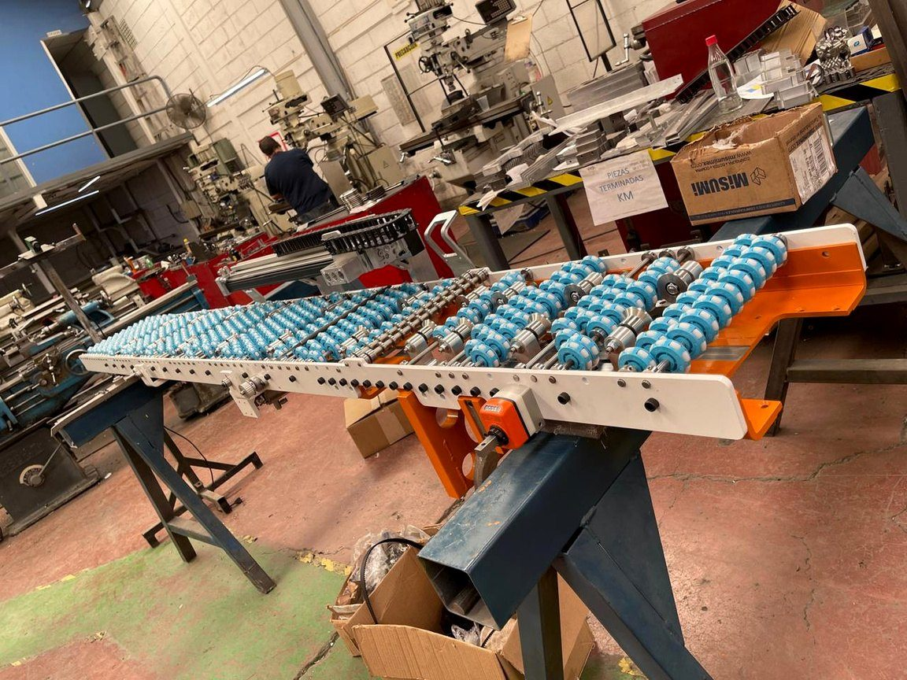
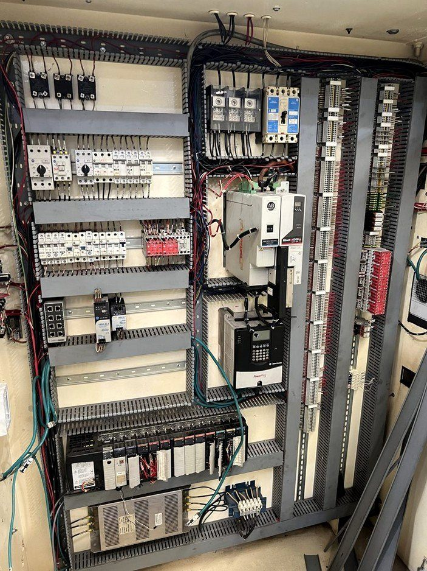
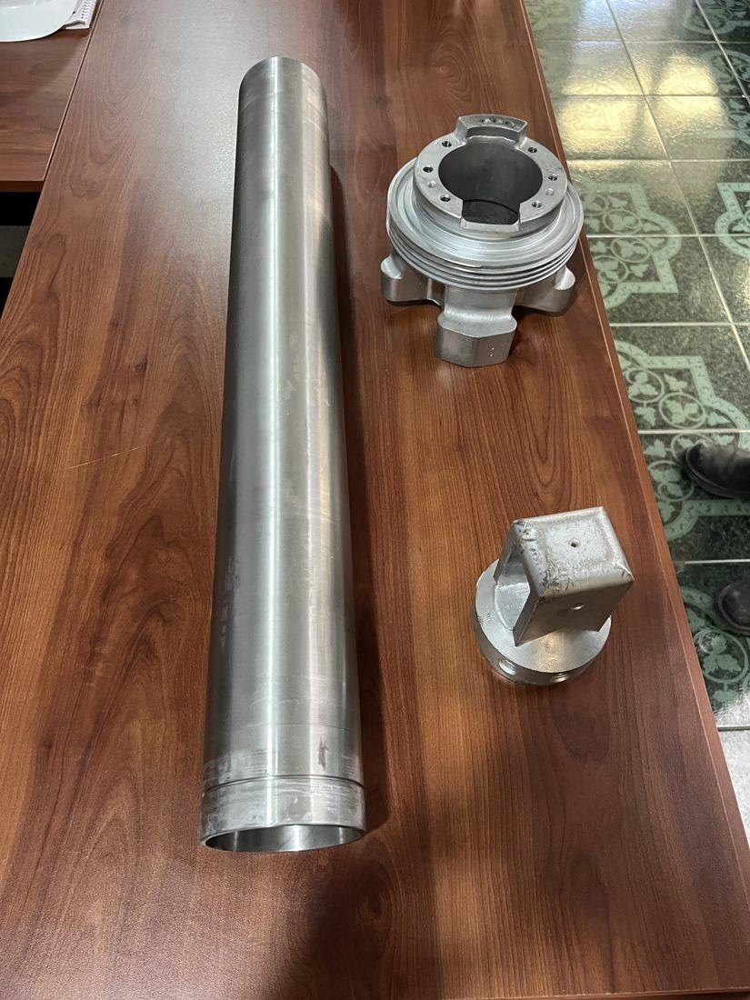

AntesDespués
AntesDespués
Llantera multinacional · Reconstrucción
Reconstrucción de máquina de armado
Desarmado completo, reparación mecánica, recableado y pintura. La máquina regresó a producción. Deslice la barra para comparar.
Diseño, fabricación, automatización y reconstrucción para plantas que no pueden parar. Por confidencialidad no publicamos el nombre del cliente en cada caso.
Tier 1 automotriz · Retrofit de automatización y seguridad
El reto
El operador trabajaba demasiado cerca de la cuchilla en movimiento y las llantas de prueba podían salir proyectadas durante el corte. Había que sacarlo de la zona de peligro y ampliar la capacidad de corte sin comprometer la estructura original de la máquina.
La solución
SolidWorks · EPLAN · TIA Portal · S7-1200 · Servo + variador
Llantera multinacional · Exportación a Canadá
El reto
Darle al operador una estación ergonómica para hacer la inspección final de calidad de la llanta terminada.
La solución
El resultado
Prueba funcional en nuestro taller con el ingeniero del cliente presente y validación remota desde Canadá. Las dos máquinas se aprobaron a la primera y salieron embaladas, con placas de datos en inglés técnico.
SolidWorks · Allen-Bradley · Neumática · Reportes de avance al cliente
Llantera multinacional · Fabricación y automatización · 5 unidades
El reto
El cliente contaba con una prensa de espuma obsoleta y requería modernizarla y automatizarla.
La solución
El resultado
5 prensas entregadas: 4 en plantas del cliente en el Bajío y 1 exportada a Estados Unidos. Todas fueron aprobadas en su primera prueba de aceptación.
TIA Portal · S7-1200 · Cortinas de seguridad · Neumática
Toque cualquier foto para verla en grande.
AntesDespués
Llantera multinacional · Reconstrucción
Desarmado completo, reparación mecánica, recableado y pintura. La máquina regresó a producción. Deslice la barra para comparar.

Diseño y fabricación · Seguridad de máquina
Mesa elevadora, pedal de mando, tablero de control, paro de emergencia por cable y celda de malla con puerta.

Antes Después
DespuésLlantera multinacional · Reconstrucción
Reconstrucción mecánica, eléctrica y de pintura del equipo completo.
Mantenimiento mayor · En planta
Desmontaje, maniobra y reparación de componentes pesados: bastidores, flechas y engranes de gran diámetro.
Maquinados
Carcasas y componentes maquinados en nuestro taller.

Llantera multinacional · Exportación
Ensambles de transportadores fabricados, probados y embalados en nuestro taller para una planta en Norteamérica.

Cierre de planta · Desmantelamiento
Desenergizado, desmontaje y separación de componentes de máquinas de primera y segunda etapa, con una cuadrilla de unas 10 personas.

Diseño y fabricación
Transportador de banda con estructura abatible, diseñado y fabricado en nuestro taller.

Prensa de vulcanizado · Maquinados
Actuador para la membrana de una prensa que trabaja con vapor. Barril y tapas maquinados y bruñidos en acero inoxidable.
Envíenos fotografías o planos por WhatsApp y le responderemos en menos de 24 horas.